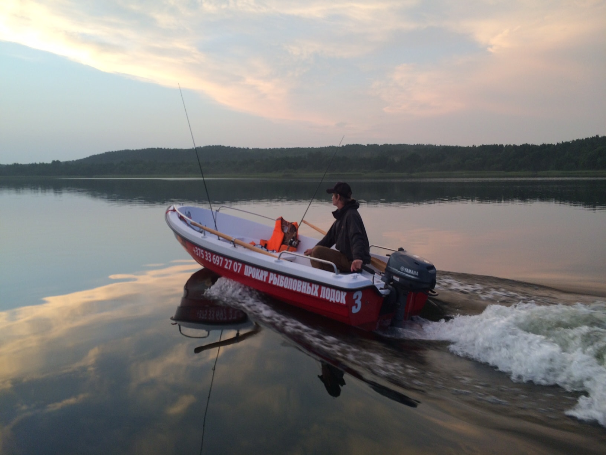

Рыбалка на браславских озерах
Говоря о курортном отдыхе в Беларуси, первым делом на ум приходят Браславы.
Говоря о трофейной рыбалке в Беларуси – ассоциация все та же.
Недаром край Браславских озер именуют белорусской Финляндией.
В озёрах района обитает около 30 видов рыб:
- Угорь
- Карп
- Сазан
- Лещ
- Щука
- Густера
- Язь
- Голавль
- Белый амур
- Толстолобик
- Линь
- Окунь
- и другие
Для самостоятельного отдыха на природе в Национальном парке в береговой линии озёр построено около трёх десятков туристических стоянок
Каждое из озер отличается своими особенностями, своей неповторимостью:
озеро Дривяты в солнечный день отливает позолотой,
соседнее небольшое озеро Цно встречает бледно-зеленой окраской,
озеро Войсо - темное, следующее за ним Струсто - голубое,
самое северное, озеро Снуды поражает взор яркой синевой.
